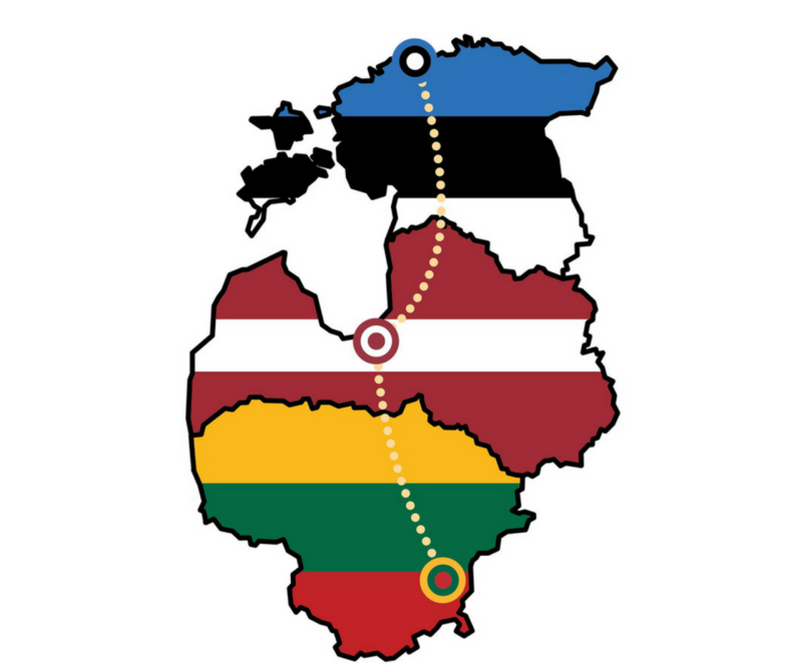
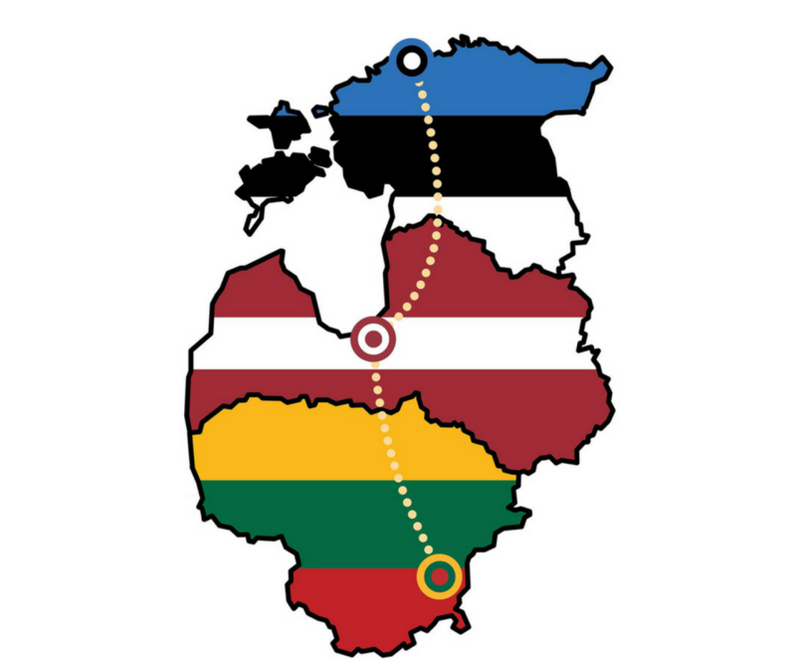

The Baltic Way or Baltic Chain
 Fig. 1. Baltic Way is Baltic people's peaceful protest against Soviet occupation. On August 23, 1989, fifty years after Hitler and Stalin agreed to occupy Estonia, Latvia and Estonia; approximately two million people joined their hands to form a human chain spanning 690 kilometres (430 mi) across the three Baltic states of Estonia, Latvia and Lithuania, which at the time were still occupied by the Soviets.

Fig. 2. The Baltic Way Map.
Fig. 1. Baltic Way is Baltic people's peaceful protest against Soviet occupation. On August 23, 1989, fifty years after Hitler and Stalin agreed to occupy Estonia, Latvia and Estonia; approximately two million people joined their hands to form a human chain spanning 690 kilometres (430 mi) across the three Baltic states of Estonia, Latvia and Lithuania, which at the time were still occupied by the Soviets.

Fig. 2. The Baltic Way Map.